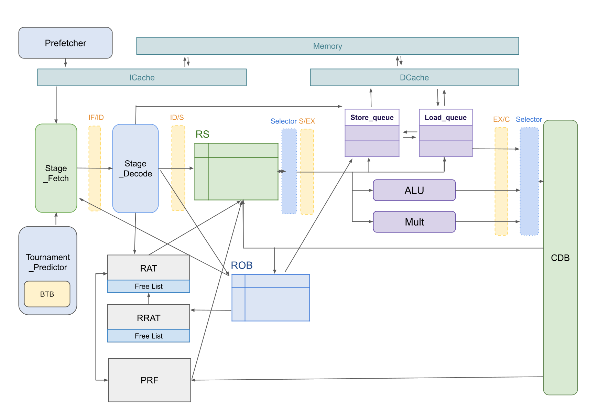
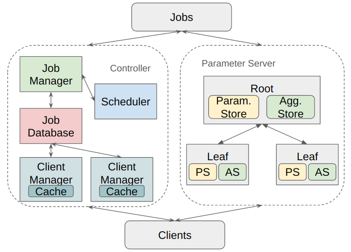
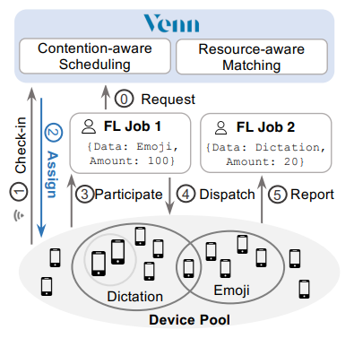
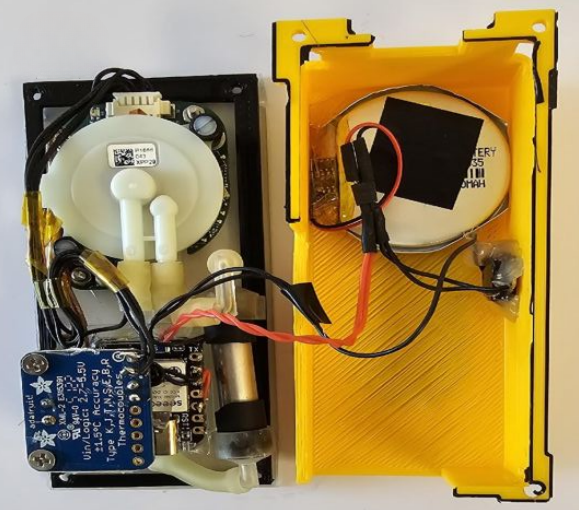
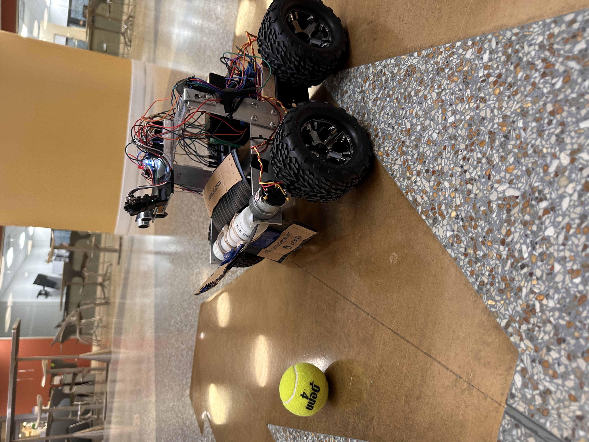
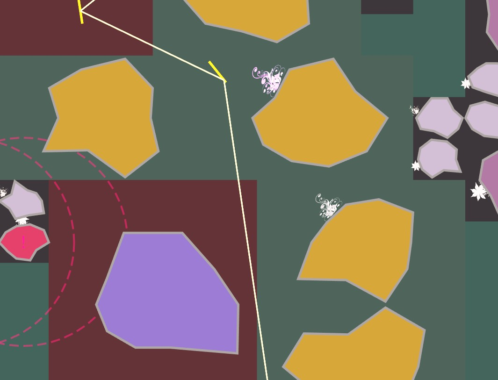

|
Eric Ding 丁鼎 CS PhD @Cornell University Email: ericding (at) cs (dot) cornell (dot) edu |
Hi! I'm a second-year PhD student in Computer Science at Cornell University, advised by Prof. Rachee Singh. My research interests revolve around systems, networking, and machine learning. I'm currently working on networking infrastructure for large-scale machine learning systems.
Previously, I conducted research at SymbioticLab under the guidance of Prof. Mosharaf Chowdhury, where I built a scalable software system for federated learning, and worked on scheduling algorithms for multi-tenant workload acceleration under resource constraints.
I received my B.Eng in Computer Science from the University of Michigan with Summa Cum Laude, and B.Eng in Electrical and Computer Engineering from Shanghai Jiao Tong University with honors.
Last updated: 11-2-2025
Publications
Photonic Rails in ML Datacenters
Eric Ding, Chuhan Ouyang, Rachee Singh
Twenty-Fourth ACM Workshop on Hot Topics in Networks (HotNets 2025) [pdf]
Efficient AllReduce with Stragglers
Arjun Devraj, Eric Ding, Abhishek Vijaya Kumar, Robert Kleinberg, Rachee Singh
arXiv preprint [pdf]
Morphlux: Transforming Torus Fabrics for Efficient Multi-tenant ML
Abhishek Vijaya Kumar, Eric Ding, Arjun Devraj, Darius Bunandar, Rachee Singh
arXiv preprint [pdf]
PipSwitch: A Circuit Switch Using Programmable Integrated Photonics
Eric Ding, Rachee Singh
Optical Fiber Communication (OFC) Conference 2025 [pdf]
Venn: Resource Management Across Federated Learning Jobs
Jiachen Liu, Fan Lai, Eric Ding, Yiwen Zhang, Mosharaf Chowdhury
MLSys 2025 [pdf]
WASP: Wearable Analytical Skin Probe for Dynamic Monitoring of Transepidermal Water Loss
Anjali Devi Sivakumar, Ruchi Sharma, Chandrakalavathi Thota, Eric Ding, Xudong Fan
ACS Sensors 2023 [pdf]
Talks
Co-packaged Optics, Systems for Programmable Optical Interconnects, Cornell University, April 2025
From Switch-based to Switch-less Interconnection Network, Advanced Topics in Parallel Computing, Cornell University, April 2025
An analysis of Linux scalability to many cores, Advanced System Lecture, Cornell University, Sep. 2024
Teaching
Teaching Assistant, CS5470 Systems for Large-scale ML, Cornell University, Fall 2025
Volunteering
EuroSys 2026 Shadow PC, Oct. 2025
SIGCOMM 2025 AE Committee, Aug. 2025
MLSys 2025 AE Reviewer, Mar. 2025
Lunch and Learn Czar, Cornell University, Feb. 2025 - May. 2025
EECS 280 Peer Tutor, University of Michigan, Feb. 2024 - May. 2024
Selected Projects
The design and implementation of an out-of-order N-way superscalar processor: The processor adopts the R10k style register renaming scheme, and supports 32-bit RISC-V ISA. Its features include a load/store queue with internal data forwarding, tournament branch predictor, memory prefetcher, and non-blocking set-associative data and instruction cache.

Propius is a federated learning (FL) resource management system, employing a microservice architecture based on gRPC protocol and Redis database. The system provides a clean abstraction on top of the device-level heterogeneity over the network, and supports various scheduling policies for different objectives. Venn, an advanced scheduling policy for FL job completion time (JCT) optimization, is deployed in Propius.

Venn is an FL scheduler that efficiently schedules ephemeral, heterogeneous devices among many FL jobs, with the goal of reducing their average job completion time (JCT). Venn proposes a contention-aware scheduling heuristic to minimize the average scheduling delay, and a resource-aware device-to-job matching heuristic that focuses on optimizing response collection time by mitigating stragglers. Our evaluation shows that, compared to the state-of-the-art FL schedulers, Venn improves the average JCT by up to 1.88X.

WASP: Wearable Analytical Skin Probe, is a wearable closed-chamber hygrometer-based device. WASP uses an in-house communication protocol that operates atop I2C and Bluetooth Low Energy protocols. This protocol enables fast and reliable wireless communication between microcontrollers, ensuring high-fidelity data collection. WASP has been successfully deployed in experimental setups, measuring insensible sweating (TEWL) for early disease detection.

Tennis Ball Collector is an autonomous robot dedicated to collecting objects such as tennis balls. It can:
- Automatically search objects via an object detection model and a direction control feedback loop
- Collect objects using a spinning rotor, monitored and controlled by a infrared gate sensor
- Detect and avoid obstacles through ultrasonic sensors with noise filtering algorithms
- Operate in a robust and safe manner thanks to a well-defined finite state machine

Light Strider: Embark on an exciting journey! Light Strider is a captivating front-end web game written in ELM. You'll take charge of directing light beams through intricate mazes, strategically employing mirrors and light splitters to avoid obstacles. The game leverages intricate graph algorithms to generate infinite game maps. Give it a try!
